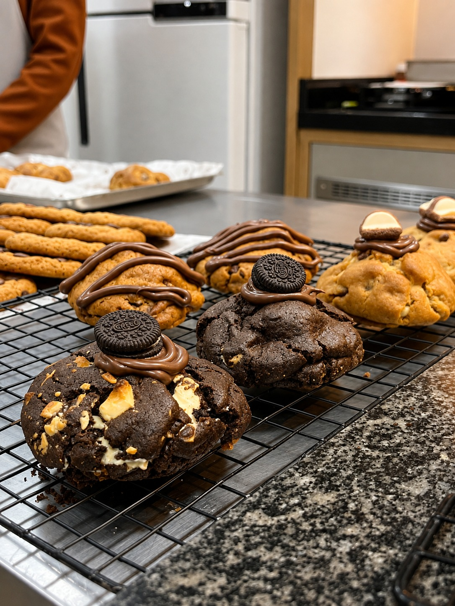
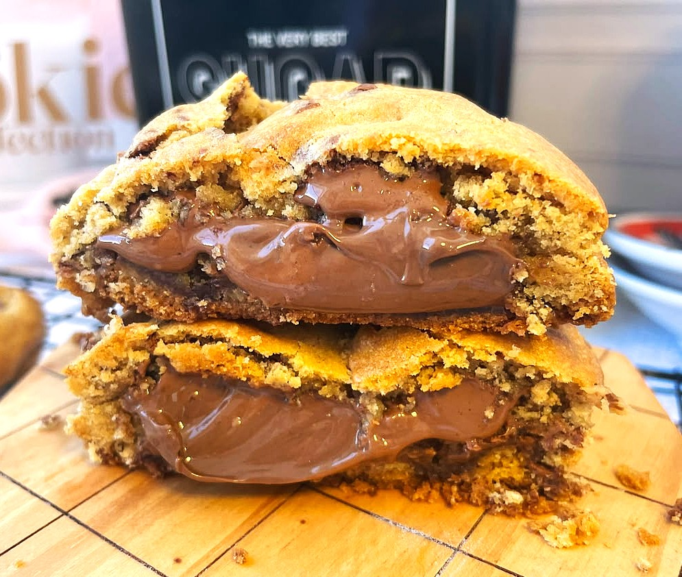
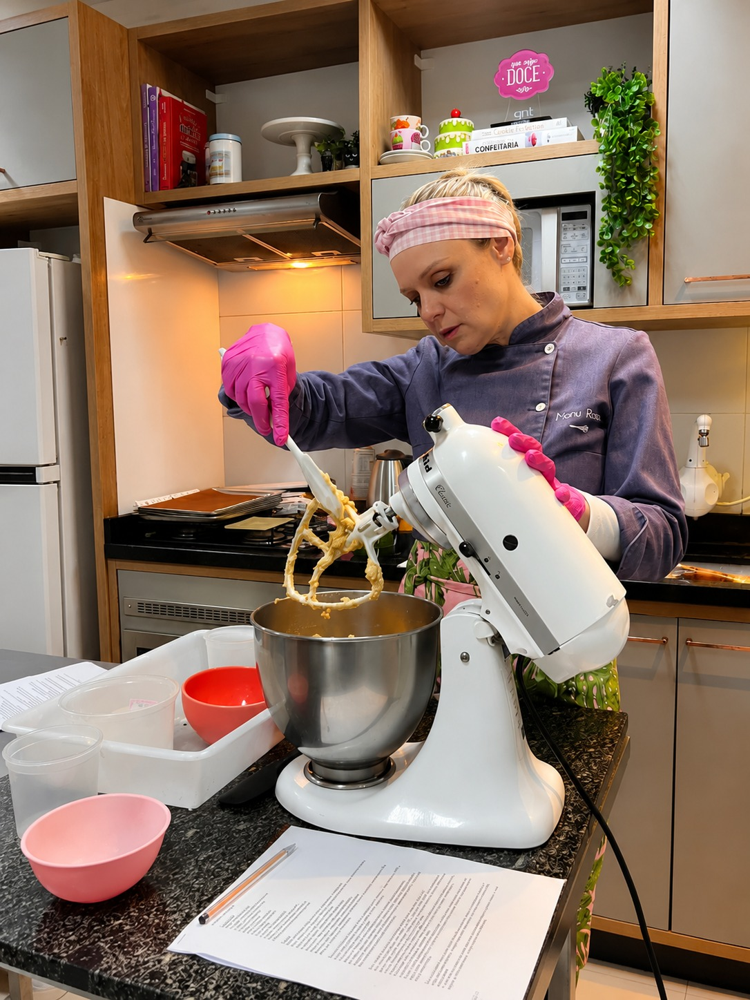
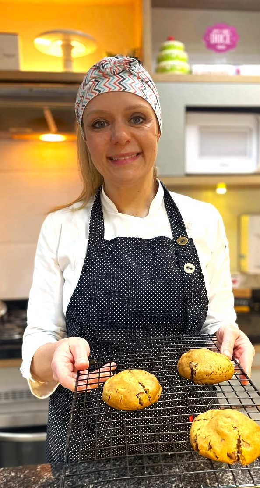
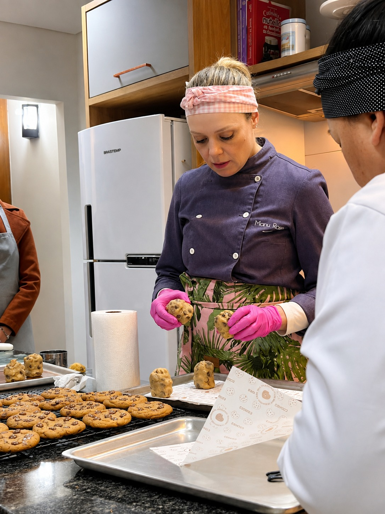
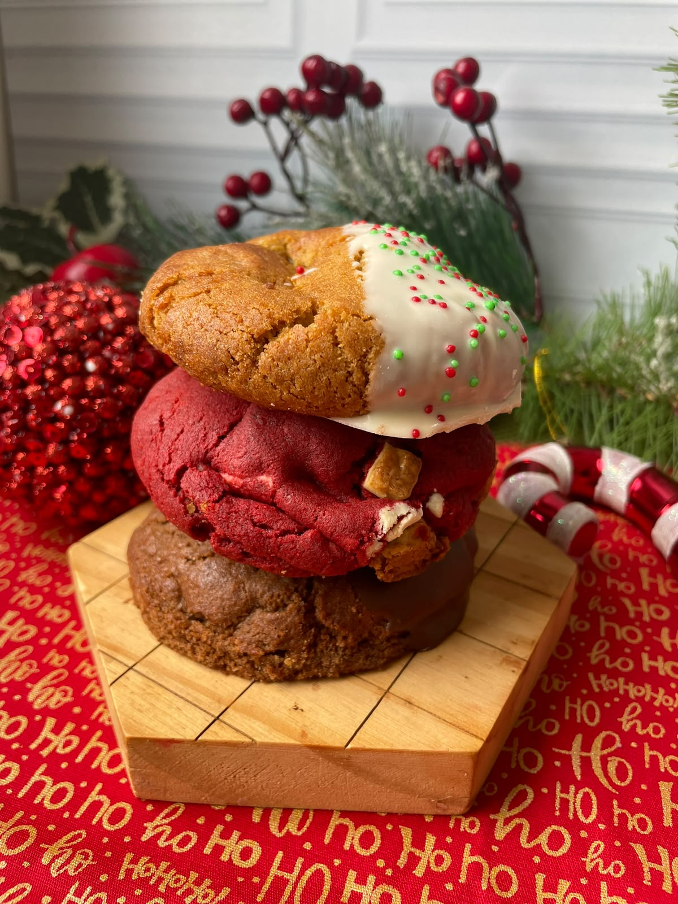

Técnicas que fazem diferença
Entenda detalhes importantes para melhorar a textura, a estrutura e o resultado dos seus cookies.
Encontros gratuitos e online com Manu Rosa
O Natal pode ser o começo de novas oportunidades com cookies!
QUERO ME INSCREVERAprenda técnicas e descubra possibilidades para criar, aperfeiçoar e vender cookies.
E o melhor: esse conhecimento pode abrir caminhos para continuar criando e vendendo cookies durante o ano inteiro.

Cookies: Além da Receita

Entenda detalhes importantes para melhorar a textura, a estrutura e o resultado dos seus cookies.
Descubra como explorar massas, sabores, recheios e finalizações.
Conheça ideias para começar a vender neste Natal ou ampliar o cardápio que você já oferece.
Aprenda conceitos que poderão ajudar você a continuar criando depois das festas.
Programação das lives
Para quem é?
Para quem deseja começar a vender cookies e conquistar uma renda extra, para quem já trabalha com confeitaria e quer ampliar o cardápio e para quem deseja melhorar suas técnicas e resultados.

Técnica na prática
Os encontros são uma oportunidade para compreender escolhas técnicas e desenvolver autonomia ao criar seus próprios cookies.

Quem vai te ensinar?
Manu Rosa é confeiteira, empreendedora e professora de confeitaria desde 2012.
Com formação em confeitaria na França e experiência no ensino presencial, acredita que aprender confeitaria vai muito além de reproduzir receitas: é compreender técnicas e desenvolver autonomia para criar.

Natal e o ano inteiro
O Natal pode abrir uma nova frente de vendas. As técnicas e possibilidades aprendidas também acompanham sua produção ao longo do ano.

Cookies: Além da Receita